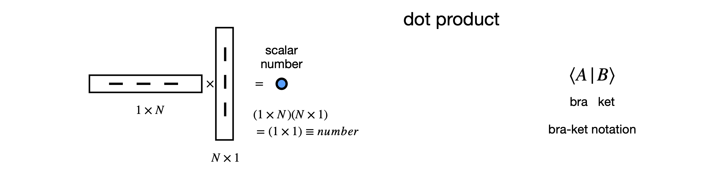

Matrices¶
# import all python add-ons etc that will be needed later on
%matplotlib inline
import numpy as np
import matplotlib.pyplot as plt
from sympy import *
init_printing() # allows printing of SymPy results in typeset maths format
plt.rcParams.update({'font.size': 14}) # set font size for plots
4 Basic properties of Matrices¶
The rest of this chapter describes the properties and uses of matrices. The determinant described in the previous sections can be considered as one of the many properties of a matrix. In several places, reference is made to eigenvalues and eigenvectors before they have been fully explained, which is done in Section 12.3. The meaning of these words is outlined below but how they are obtained is left unanswered for the moment. The eigenvalue - eigenvector equation is met, for example, in solving problems in Quantum Mechanics and Chemical Kinetics and has the form,
provided the function is not zero. In matrix form, the eigenvector - eigenvalue equation is
where \(\pmb A\) is an \(n \times n\) square matrix, \(\pmb x\) is one of \(n\), one-dimensional column matrices (column vectors) and each one is called an eigenvector, \(\lambda\) represents one of \(n\) numbers, and each \(\lambda\) is called an eigenvalue.
Addition and subtraction¶
To add or subtract two matrices they must have the same shape. To add or subtract a constant or another matrix their individual elements are added or subtracted. Similarly, to multiply or divide by a constant number (a scalar), each element is also multiplied or divided by this value. Multiplying two matrices together is more complicated and depends on the order with which this is done and the shapes of the two matrices; sometimes it is just not possible.
The notation used, is that bold italic letters indicate a matrix and the numbers \(\pmb 0\) and \(\pmb 1\) for the null and unit matrix respectively.
Suppose two matrices are \(\displaystyle \pmb{A}=\begin{bmatrix} 2&1&5\\-5 & 2 & 6\end{bmatrix}\) and \(\displaystyle \pmb{B}=\begin{bmatrix} 1&10&8\\-3 & 3 & 9\end{bmatrix}\) calculating
is easy, for example, taking elements individually,
and similarly for the other calculations.
Division¶
One matrix cannot be divided by another; the inverse matrix of the divisor is formed instead and then these matrices are multiplied together. The inverse of a matrix \(\pmb M\) is always written as \(\pmb{M}^{-1}\). Generating the inverse of a matrix is difficult unless the matrix is small, and one would normally use Python/Sympy to do this.
Multiplication¶
Matrices can be multiplied together. The multiplication order is always important; \(\pmb{AB}\) is not necessarily the same as \(\pmb{BA}\). With three or more matrices \(\pmb{ABC}\), the multiplication sequence does not matter as long as the ordering is the same. This is the associatite property
If \(\pmb{BC}\) are multiplied first, then the result left multiplied by \(\pmb{A}\), this is the same as multiplying \(\pmb{AB}\) to form a new matrix, \(\pmb{D}\) for example, then performing the multiplication \(\pmb{DC}\). Habitually, we start at the right and multiply the \(\pmb{BC}\) pair first then left multiply by \(\pmb{A}\). The details are described in Section 5.
There are a few special matrices and several types operations that can be performed on matrices and these are describe next.
4.1 The zero or null matrix¶
As you would expect it is possible to have a matrix of zeros; adding this to another matrix changes nothing, but multiplying by it annihilates the other matrix leaving only the zero matrix as you would expect.
4.2 The unit or identity matrix \(\pmb{1}\).¶
This is a matrix of unit diagonals with all other elements being zero. The unit matrix is also called the multiplicative identity.
4.3 Diagonal matrix¶
This is a matrix whose diagonals can take any value, but all other elements are zero. The unit matrix is a special case. In general
4.4 Trace or character of a matrix¶
The trace, spur, or character of any matrix \(\pmb M\), is the sum of its diagonal elements only,
for example
By multiplying out the product of matrices, the trace of the product is found to be unchanged if they are permuted cyclically:
This fact is very useful in group theory because the trace of a matrix forms a representation of a molecule’s symmetry. Because of this rule, the trace, and hence representation, is independent of the basis set used to describe the symmetry.
4.5 Matrix transpose \(\pmb{M}^T\)¶
The transpose operation replaces rows and columns with one another, and so exchanges element \((1, 2)\) with \((2, 1)\), and \((1, 3)\) with \((3, 1)\) and so on. For example;
and for a square matrix this operation leaves the diagonal unchanged
You can appreciate that two transposes reproduce the initial matrix \((\pmb{M}^T)^T = \pmb{M}\).
A symmetric matrix is equal to its transpose and therefore must also be square and have off-diagonal elements \(a_{ij} = a_{ji}\). An antisymmetric matrix satisfies the identity \(\pmb{A} = -\pmb{A}^T\) and must therefore have zeros on its diagonal and have components \(a_{ij} = -a_{ji}\); for example, such a matrix and its transpose is
When two matrices are multiplied, then the transpose reorders the matrix multiplication because rows are converted into columns and vice versa. This means that
Matrix multiplication is described in section 5 and if for example if \(\displaystyle \pmb{A}=\begin{bmatrix} a & b \\ c & d \end{bmatrix},\; \pmb{B}=\begin{bmatrix} 1 & 2 \\ 3 & 4 \end{bmatrix}\), then
Performing the transpose then multiplying in reverse order gives the same result.
4.6 Complex conjugate M*¶
This changes each matrix element with its complex conjugate, assuming there are complex numbers in the matrix; if not, it has no effect.
The conjugate of a matrix \(\pmb{M}\) is labelled \(\pmb{M}^*\). In making a complex conjugate each \(i\) is replaced by \(-i\) where \(i =\sqrt{-1}\), for example \([3\; i\;4]^* =[3\;-i \;4]\). Some properties are
where the last property describes the effect on the determinant of the matrix.
4.7 Adjoint, \(\pmb{M}^\dagger\)¶
This grand sounding name simply means
\(\qquad\qquad\)’Form the complex conjugate, then transpose the matrix or vice versa’
The special symbol \(\dagger\) is conventionally used as a superscript. The effect of the adjoint operation is
In quantum mechanics, the adjoint is always used to convert a ‘ket’ into a ‘bra’ and vice versa, see Chapter 8.
4.8 Hermitian or self-adjoint matrix \(\pmb{M}^\dagger=\pmb{M}\)¶
In these matrices the diagonals are real and the off-diagonals \(a_{i,j} = a_{j,i}^*\). The Pauli spin matrices of quantum mechanics are Hermitian; for example
Taking the transpose then the complex conjugate produces a matrix that is clearly the same as \(\pmb{\sigma}_2\). If the Hermitian matrix is real, which means that it contains only real numbers, then it must be symmetric.
In quantum mechanics, a matrix containing the integrals that evaluate to expectation values is always a real Hermitian matrix whose eigenvalues are real and eigenvectors orthogonal, but not necessarily normalized.
An anti-Hermitian matrix is defined as \(\pmb{M}^\dagger = -\pmb{M}\).
4.9 Inverse of a square matrix, \(\pmb{M}^{-1}\)¶
One matrix cannot be divided into another or into a constant so the operation \(1/\pmb{M}\) is not allowed; instead the matrix inverse must be formed. Furthermore the inverse is defined only for a square matrix and then only if its determinant is not zero, \(|\pmb{M}| \ne 0\).
The inverse is another matrix labelled \(\pmb{M}^{-1}\), such that
where \(\pmb{1}\) is the unit (diagonal) matrix. Formally, we can find the inverse matrix element by element with the \(ij^{th}\) element given by
where \(| \pmb{M} | \ne 0\) is the determinant and \(| \pmb{C}_{j,i} |\) is the cofactor matrix of row \(j\) and column \(i\). Note the change in ordering of the indices. Cofactors were described in Section 2.2. Generally, it is best to use Python/Sympy to calculate the inverse, because, besides being tedious, the chance of making an error is very high. The matrix inverse is met again when solving equations.
If the matrix is diagonal then its inverse comprises the reciprocal of each term.
and this is used in the calculation of vibrational normal modes.
4.10 Singular matrix, determinant \(|\pmb{M}|=0\)¶
The determinant is zero and the matrix has no inverse. This is not the same as the null matrix, \(\pmb{0}\). Odd sized \(n \times n\), anti-symmetric matrices are singular, see section 4.6.
4.11 Unitary matrix \(\pmb M^\dagger = \pmb M^{-1}\) or \(\pmb {M}^\dagger \pmb{M} = \pmb{1}\) and \( |\pmb {M} | = 1\)¶
Two examples of unitary matrices are \(\displaystyle \quad\begin{bmatrix} 0 & 1 & 0 \\ 0 & 0 & 1\\1 & 0 & 0 \end{bmatrix}\),
which has the determinant \(0(0 - 1) - 1(0 - 1) + 0(0 - 0) = 1\),
and the rotation matrix
whose determinant is unity because \(\sin^2(\theta)+\cos^2(\theta)=1\).
4.12 Orthogonal matrices¶
Orthogonal matrices are always square and have the properties that if \(\pmb M\) is a matrix then
which means that the matrix transpose is its inverse and when the matrix and its transpose are multiplied together a unit diagonal matrix results. The orthogonal matrix has a determinant that is \(\pm 1\); the eigenvalues are all \(+1\). However, a determinant of \(\pm 1\) does not mean that a matrix is orthogonal. The product of two orthogonal matrices is also an orthogonal matrix.
The rotation matrix, equation 3, is orthogonal, as is the matrix \(\displaystyle \frac{1}{\sqrt{2}}\begin{bmatrix} 1 & 1 \\ 1 & -1 \end{bmatrix}\) which shows that a real orthogonal matrix is the same as a unitary matrix.
In an orthogonal matrix, rows and columns form an orthonormal basis and each row has a length of one. When an orthogonal matrix operates on (linearly transforms) a vector or a matrix representing an object, such as a molecule, the molecule is unchanged, meaning that relative bond angles and lengths remain the same but the coordinate axes moved so the object appears to have been rotated when viewed on the computer screen. Orthogonal matrices are used to represent reflections, rotations, and inversions in molecular group theory. Matrix decomposition methods make use of orthogonal matrices. One matrix method called singular value decomposition is used in data analysis to separate out overlapping spectra into their constituent parts.
4.13 Determinants¶
Evaluating determinants was described in Section 2. The determinants of different types of square matrices have the following properties that do not involve evaluating the determinant.
where \(n\) is the length of the determinant’s row or column.
5 Matrix multiplication¶
The shape of the matrices and their multiplication order must both be respected. If multiplication is possible, and it not always is, then, in general, multiplication \(\pmb{AB}\) does not give the same result as \(\pmb{BA}\). The matrices
cannot be multiplied together, because multiplication is only possible if the number of columns of the left-hand matrix is equal to the number of rows of the right-hand one. The matrices are then commensurate or conformable. The result is a matrix whose size is determined by the number of rows of the left hand matrix and the number of columns of the right hand matrix, e.g.
The calculation below shows the multiplication \(\pmb{C} = \pmb{AB}\); the arrows show how the top element in \(\pmb{C}\) is calculated as the product of element 1 of row 1 with element 1 of column 1. To this value is added the product of element 2 of row 1 and element 2 of column 1 and so on for all the elements in a row. This is why the number of rows and columns must be the same. You can also envisage the multiplication as the dot product of the each row with each column in turn.

Multiplying two \(2 \times 2\) matrices produces
and it is useful to look at the pattern of elements where you can see the \(\pmb{A}\) matrix in the pattern of \(a\)’s and columns in \(\pmb{B}\) appear as rows in the sums. If the matrices are not square, multiplying a \(n \times m\) matrix by a \(m \times r\) one results in a \(n \times r\) matrix as shown above. The equation with which to calculate the (row - column) \(ij^{th}\) element of any matrix multiplication is
where the sum index \(k\) runs from \(1 \to m\), the number of columns in matrix \(\pmb{A}\) or rows in \(\pmb{B}\) and \(i\) takes values \(1 \to n\) and j from \(1 \to r\). Multiplying a \(2 \times 3\) matrix with a \(3 \times 2\) one, the number of columns in the left matrix is the same as the number of rows in the right-hand one and therefore the result is a \(2 \times 2\) square matrix,
where element \(R=a_{21}b_{11} + a_{22}b_{21} + a_{23}b_{31}\) and element \(S= a_{21}b_{12} + a_{22}b_{22} + a_{23}b_{32}\). A \(2 \times 3\) and a \(3 \times 1\) matrix produce a \(2 \times 1\) column matrix
where \(P = a_{11}b_1 + a_{12}b_2 + a_{13}b_3\) and \(R = a_{21}b_1 + a_{22}b_2 + a_{23}b_3\).
Suppose there are three matrices \(\pmb{ABC}\), then the safest rule to follow is to left-multiply \(\pmb{C}\) by \(\pmb{B}\) first, then to left-multiply the result by \(\pmb{A}\). The same rule is applied to several matrices; start at the right and work to the left. However, by the associative rule, Section 4.1, as long as the order \(\pmb{ABCD}\) is maintained, this product can be multiplied in any order.
The diagrams in Fig. 7 show, diagrammatically, the result of multiplying differently shaped matrices. The ‘bra-ket’ notation is shown also.

Figure 7. Pictorial representation of matrix multiplication. The bra-ket notation used in quantum mechanics is shown on the right. The dot product is also called the inner product.
5.1 Matrix sum¶
To sum the terms in a square matrix left-multiply by a unit row vector and right-multiply by a unit column vector. For example
5.2 bra-ket notation¶
Often the bra-ket notation is used in quantum mechanics. The ket \(|k\rangle\) is a single column matrix (a column vector) \(\displaystyle | k\rangle =\begin{bmatrix} a \\ b \\ \vdots \end{bmatrix}\) and the bra is the single row matrix (or vector) and is always the complex conjugate of the ket. \(\displaystyle \langle j|=\begin{bmatrix} a^* & b^* & \cdots \end{bmatrix}\). The \(\langle j |k\rangle\) is a scalar number, and \(|k\rangle \langle j|\) a square matrix.
These objects are discussed in more detail in chapters 6 and are mentioned here as they provide a shorthand way of visualizing matrix multiplication; see Figure 7. There is no specific symbol for a scalar or a square matrix; they have to be represented by the bra-ket pair.
5.3 Commutators¶
If matrices are not square then there is only one way to multiply them: the left-hand matrix’s number of columns must equal the right-hand matrix’s number of rows. When both matrices are square, to be multiplied they must be of the same size and we can then choose which is to be the left-hand and which the right-hand side of the multiplication, and now the order of multiplication does matter as illustrated on the previous page. Sometimes the result is the same, i.e. \(\pmb{AB} = \pmb{BA}\) then the matrices are said to commute, but generally they do not and, therefore, \(\pmb{AB} \ne \pmb{BA}\).
The commutator of two square matrices \(\pmb{A}\) and \(\pmb{B}\) is also a matrix and is defined as
If the result is the null matrix \(\pmb{0}\), which is full of zeros, \(\pmb{A}\) and \(\pmb{B}\) are said to commute:
Sometimes expressions such as \([\pmb{C},[\pmb{A,B}]]\) may be met. This means: work out the inside commutation first, then the commutation with each term that this produces:
Commutation is very important in quantum mechanics; only observables that commute can be observed simultaneously. Position and momentum, which do not commute, or those components of angular momentum, which also do not commute, have values that are restricted by an amount determined by the Heisenberg Uncertainty Principle when being observed simultaneously.
Commutation is common of operators in general. The commutator relationship applies to any two operators \(\pmb{P}\) and \(\pmb{Q}\), which need not be matrices, but could be the differential operator such as \(d/dx\) or \(x\) itself. This parallel means that we can consider matrices as operators. The commutator will in general operate on a function, for example,
and \(f\) can be any normal function, \(\ln(x),\, \sin(x)\), and so on. In molecular group theory, the five types of operators that are the identity, rotation, reflection, inversion, and improper rotation (combined rotation and reflection) sometimes commute with one another although this depends on the point group. Section 6 describes these operations.
5.4 Integral powers of square matrices¶
Only integral powers of matrices are defined and are calculated by repeated multiplication, for example,
and so on, for example
The similarity transform, see Section 13.4, can be used to obtain high integer powers of matrices, however, if the matrix is diagonal then taking the power is easy because the diagonal elements are raised to the power. The power need not be positive; therefore, the inverse of a diagonal matrix is easily obtained.
5.5 Functions of matrices¶
In the study of the theory of nuclear magnetic resonance, NMR, a quantum mechanical description of nuclear spin is essential. To explore the rotation of the magnetization as used in inversion recovery, spin-echo, or a complicated two-dimensional experiment, such as COSY, requires the exponentiation of matrices (Levitt 2001). Exponentiation can only be performed by expanding the exponential and evaluating the terms in the series one by one as
and is \(x\) is a variable \(\displaystyle e^{-x\pmb{M}}=\pmb{1} -x\pmb{M}+ x^2\frac{\pmb{M}^2}{2!}-\cdots\)
The matrix \(\pmb{1}\) is a unit diagonal matrix. Similar expressions are formed with trig and log functions according to their expansion formula and with Taylor or Maclaurin series for other functions. The familiar relationship \(e^Ae^B = e^{A+B}\) is only true if the matrices \(A\) and \(B\) commute. In Section 13.2 and 13.3 a transformation is describe which enables the exponential of a matrix to be found.
5.6 Block diagonal matrices¶
In many instances, a matrix can be blocked into smaller ones symmetrically disposed along the diagonal. The result of this is that the problem reduces to the lesser one of solving several matrices where each is much smaller than the whole and is therefore more easily solved. Why should we bother with this if the computer can diagonalize any matrix we give it to do? The reason is that eigenvalues can more easily be identified within the basis set by doing the calculation this way. Recall that the basis set you choose to use, for example in a quantum problem, determines the ordering of elements in a matrix. Why does this matter? It matters because when the spectrum from a molecule is observed, which measures only the difference in energy levels, we would like to know what quantum numbers give rise to what spectral lines. If the matrix is a block diagonal one, then this is made somewhat easier because we know what parts of the basis set elements are involved because each block when diagonalized contains only that part of the basis set that was in it in the first place. If the whole matrix is diagonalized blind, as it were, and without thinking about the problem beforehand, this information can be lost because all the elements and hence eigenvalues can be mixed up. The elements in the basis set can be ordered in any way you want, and different basis sets can be chosen for the same problem. By trying different ordering, it is sometimes possible to discover a block diagonal form for a matrix and so aid its solution. In the study of group theory, blocking matrices proves to be a powerful way of determining the irreducible representation; see Section 6.
The following matrix has a \(2 \times 2\), a \(3 \times 3\), and a \(1 \times 1\) block.
5.7 The special case of the \(2\times 2\) matrix¶
The matrix is \(\displaystyle \pmb{M}= \begin{bmatrix} A & B \\C & D \end{bmatrix}\)
and has determinant \(\displaystyle |\pmb{M}|=AD-BC\)
trace \( Tr(\pmb{M})=A+D\)
and inverse \(\displaystyle \pmb{M}^{-1}= \frac{1}{|\pmb{M}|}\begin{bmatrix} D & -B \\-C & A \end{bmatrix}\)
The eigenvalues (see section 12.3) are solutions of the characteristic equation
or equivalently
which are
As a check \(\lambda_1+\lambda_2=Tr(\pmb{M})\) and \(\lambda_1\lambda_2=|\pmb{M}|\).
The eigenvectors are \(\displaystyle v_1=k \begin{bmatrix} B\\\lambda_1-A \end{bmatrix}\) and \(\displaystyle v_2=k\begin{bmatrix} B\\\lambda_2-A \end{bmatrix}\) where \(k\) is an arbitrary constant, for example to normalise the eigenvectors.
5.8 Using Python and Sympy.¶
The is a distinction between doing numerical and symbolic calculations. Python/numpy is used for numerical work and Sympy for algebraic/symbolic calculations. The notation is slightly different depending on whether you use Sympy or numpy.
(a) Symbolic calculations using Sympy¶
M, N, a, b, c, d = symbols('M, N, a, b, c, d') # define symbols to use
M = Matrix( [[a, b], [c, d]] ) # note double sets of brackets
M
M.det() # determinant
N = Matrix([[d,a],[c,b] ])
N*M # matrix multiply
M*N # matrix multiply
N*M - M*N # M and N do not commute
V = Matrix([2,3]) # define vector column
V
W = Matrix ([5,4])
V.dot(W) # dot product is a scalar number
Transpose(V)*W # same as dot product
V*transpose(W) # outer product is a matrix see figure 7
(B) Using numpy for numerical calculation. Note that the notation is different to that of Sympy¶
a = np.array([[1, 3], [5, 1]])
b = np.array([[4, 1], [2, 2]])
np.matmul(a, b) # matrix multiply
array([[10, 7],
[22, 7]])
a @ b # equivalent to np.matmul(a,b)
array([[10, 7],
[22, 7]])
a * b # this is not matrix multiply but element by element multiply
array([[ 4, 3],
[10, 2]])
v = np.array([2,3])
v.dot(v) # dot product with itself is scalar
13
np.dot(v, v) # alternative way of doing dot product
13
v @ a # will automatically make transpose
array([17, 9])
a @ v # will automatically make transpose
array([11, 13])
a @ b - b @ a # commute ? No!
array([[ 1, -6],
[10, -1]])